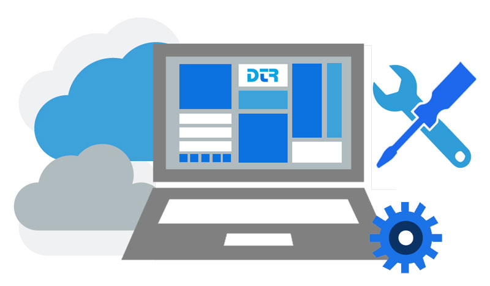

Diseño, construccion y mantenimiento de sitios web
Iniciarse en el diseño web implica necesariamente un proceso de aprendizaje.
Todo diseñador web debe conocer al menos dos lenguajes de programación web (HTML y CSS son indispensables y complementarios),
saber como elegir un servidor, contratar un dominio, pagar y cobrar por medios electrónicos, emplear editores HTML,
editar imágenes, usar editores WYSIWIG y una larga lista de etcéteras. Pero a no desanimarse! Muchas de estas
tareas son realmente sencillas, y las que no lo son, resultan realmente muy divertidas, por lo que no les costará
ningún trabajo aprender todo esto.
La primera tarea que se debe emprender, es aprender el lenguaje HTML,
para lo que recomendamos leer la guía que pueden encontrar en el siguiente enlace: conceptos básicos de HTML.
Una vez que se han obtenido los conocimientos fundamentales de HTML, el siguiente paso es aprender a utilizar
CSS(Cascading Style Sheets – Hojas de Estilo en Cascada). CSS es un lenguaje que permite al diseñador web dar
la apariencia visual desea a sus páginas. Con un correcto marcado html, puedes crear páginas muy diferentes
usando tan solo CSS. Además, CSS permite mantener separados los contenidos de la presentación, emplear el
mismo código en varias páginas, modificar la presentación de la página sin afectar a los contenidos y viceversa
y da un mayor control al diseñador sobre los estilos y formatos de sus páginas.

Diseño de sitios web
Los estándares y pautas para el diseño de un sitio Web son un conjunto de elementos de vital importancia a considerar
antes de su realización para obtener una buena usabilidad.
Todos estos dependen de que el visitante primero llegue hasta el sitio y una vez en su interior, cumpla con los
objetivos que lo condujeron hacia él de una manera rápida y simple, garantizando un futuro regreso.
En ocasiones se piensa que sólo con tener un sitio Web en Internet se logra que sea visitando por las personas
que tengan interés en su contenido, pero realmente no funciona así tan simple.


Construcción de sitios web
Todo diseñador debería conocer y entender los parámetros de una web antes de empezar a diseñarla. En este apartado
aprenderéis los fundamentos necesarios para empezar a diseñar webs comerciales. Aunque esta información es útil si deseáis construir webs
para otras personas, también puede servir como lista de comprobación para las webs que queráis crear para vosotros. Ésta es generalmente
la fase que viene después de la arquitectura de la información; debéis recoger información sobre qué quiere al cliente en su web y cómo
habría de estar estructurada, qué tipo de construcción de marca utiliza esta empresa y, entonces, utilizar esta información para crear
un borrador de diseño visual que podáis acordar con el cliente antes de añadirle gráficos y combinaciones de colores. Concretamente,
hablaremos de lo siguiente:Todo diseñador debería conocer y entender los parámetros de una web antes de empezar a diseñarla. En este
apartado aprenderéis los fundamentos necesarios para empezar a diseñar webs comerciales. Aunque esta información es útil si deseáis
construir webs para otras personas, también puede servir como lista de comprobación para las webs que queráis crear para vosotros.
Ésta es generalmente la fase que viene después de la arquitectura de la información; debéis recoger información sobre qué quiere al
cliente en su web y cómo habría de estar estructurada, qué tipo de construcción de marca utiliza esta empresa y, entonces, utilizar
esta información para crear un borrador de diseño visual que podáis acordar con el cliente antes de añadirle gráficos y combinaciones
de colores. Concretamente, hablaremos de lo siguiente:
*Aunque el color y el diseño son importantes, debéis entender lo que el cliente quiere conseguir con su web.
Esta información afectará de manera importante al aspecto y al tono de la web.
*Por lo tanto, habréis de gestionar una lista de comprobación de elementos para aprender cosas sobre
la web del cliente antes de intentar empezar a diseñar.
*También necesitáis saber más sobre las acciones de marketing anteriores de la empresa,
incluyendo la creación de marca. Esta información influirá en el diseño de la web.
EL MANTENIMIENTO DE UN SITIO WEB – “Una tarea constante”
Hoy en día casi todas las empresas promocionan sus productos o servicios mediante la Web. Esto les brinda una relación más rápida y directa
con clientes potenciales. Además los sitios Web le brindan al usuario facilidad de acceso a la información de la empresa sin la necesidad de
tener que contactar directamente a la misma.Por eso el desarrollo de sitios Web implica dedicación, conocimiento y esfuerzo, incluyendo la tecnología
adecuada para el buen manejo de los datos y por supuesto la seguridad en la transmisión de los mismos. Sin embargo cuando el desarrollador cree que ha
terminado, comienza la etapa que mayor esfuerzo y tiempo le consumirá: la de mantenimiento.
El hecho de haber desarrollado un sitio Web y haberlo subido a Internet no basta, puesto que también se debe considerar como se hará conocer, cada
cuanto tiempo se actualizara el contenido, verificar su buen funcionamiento, o si se actualizará el diseño del sitio a uno mas llamativo y/o moderno. Recordemos que ‘mantener un sitio fresco alienta a la gente a regresar’.
